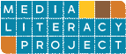

Media Literacy Project

Website:
http://www.nmmlp.org/ Location:
Albuquerque, NM
Cultivating critical thinking and activism in our media culture to build healthy and just communities.
NMMLP delivers dynamic multimedia presentations at conferences, workshops and classrooms across the country. Our media literacy curricula and action guides, including DVD-ROMs, CD-ROMs and videos, are used in countless classrooms and communities in all 50 states and abroad. NMMLP’s Catalyst Institute and other training programs have empowered thousands of people to be advocates and activists for a media literate society.
Project Description:
The outreach and development project includes:
• support for the Girl Tech Collective project
• support for the New Mexico Media Assessment
• the Media Monitoring Project
The VISTA member will assist in building NMMLP’s MAG-Net projects. MAG-Net is a project of the Center for Media Justice. NMMLP, along with other organizations nationwide, is a member of MAG-Net and is working on media justice projects in New Mexico. General support for MAG-Net will include outreach efforts – creating handouts and flyers, recruiting participants for Girl Tech Collective, documenting events and activities, and assisting with the New Mexico Media Assessment.
Girl Tech Collective is a new project NMMLP plans to launch during the 2010 fiscal year (July 2009-June 2010). Girl Tech Collective will train women of color ages 13 and up in media justice and media production skills. For this project, NMMLP will partner with Young Women United, Media Arts Collaborative Charter School, SouthWest Organizing Project, and Community Access Channel 27. NMMLP’s current MAG-Net funding helps support and maintain these partnerships. This project is being undertaken due to the fact that women of color are often left out of the media system by not receiving access to media education, media technologies, and jobs in the media system. This project will allow more women of color in Albuquerque to participate in the media system. NMMLP believes it is important for communities left out of mainstream media to have a voice, receive media education, and create their own media. Additionally, NMMLP’s community organizing efforts have increased and we are being strategic in building our base of low income and communities of color. Expansion of our community organizing work has also resulted in requests for projects such as the Girl Tech Collective.
The second MAG-Net project, the New Mexico Media Assessment, will gain information on what media people use in our state (TV shows, news sources, magazines, websites, etc.) and what New Mexican’s media needs are. The assessment will allow NMMLP to address local media issues, as well as share the information gathered with other organizations so that they can also create more effective media campaigns and programs. These projects will be a continuation of NMMLP’s media justice and community organizing efforts. Girl Tech Collective and the New Mexico Media Assessment are two more steps toward media justice in our state.
The Media Monitoring Project is also a new endeavor by NMMLP. While NMMLP frequently captures media examples for deconstruction for trainings and multimedia resources, the Media Monitoring Project will include systematic tracking and reporting of patterns. Patterns may consist within a particular television program or within a certain analysis presented among a range of television programs. One example of media monitoring that NMMLP is currently working on relates to a local media issue in Albuquerque, where thirteen bodies have been found buried on the west mesa. So far, only three women have been identified. The local news coverage repeatedly limits these women’s lives to sex work and drug use. NMMLP will not only deconstruct media examples and patterns found through the Media Monitoring Project, but begin a dialog with the local media system to create accountability for the messages they produce. The findings will also be used as a platform for community organizing and responses through independent media production. Therefore, the Media Monitoring Project will connect to NMMLP’s MAG-Net work.
Future monitoring may include television sitcoms, dramas, reality TV shows, news programs, cartoons, and commercials. Particular interest will be paid to reoccurring race, class, and gender images and comments. NMMLP is consistently looking for ways to keep our media collection, trainings, and curricula current, while also presenting a stronger media justice analysis. Media monitoring will allow NMMLP to develop more effective educational materials and trainings, as well as continue to build and strengthen partnerships. NMMLP will use the media monitoring findings in action alerts, articles for the website and e-news, presentations, media literacy kits, and DVD-ROM resources. The VISTA will be involved in both collecting media and creating a database system with the help of NMMLP staff to use with all monitoring projects.
The Media Monitoring Project will continue beyond the CTC VISTA member’s work. NMMLP staff and volunteers will continue to collect and keep records of media examples and topics. Media monitoring lays the groundwork for taking on larger media issues, such as holding local news accountable for the language they use and messages they create. This project will also increase funding opportunities for NMMLP.
Project Tangibles:
The media created through the Girl Tech Collective project, the media assessment data, and the media monitoring results will be shared with the field. Tangible products will include the Girl Tech Collective media to use as examples, outreach flyers for MAG-Net projects and events, the New Mexico Media Assessment final report, and the media monitoring report.
Supported Projects
Media Justice Organizer
Leticia Miranda
9/2010 — 9/2011
The Corps member will support Media Literacy Project’s media justice campaigns and public awareness efforts and ensure that the message and effort of the campaigns are connected and relevant to partners, members and constituents. The Corps member will also participate in all campaigns and will function as a liaison between MLP, campaign partners and will assist the Campaign Coordinator with implementing and revising as needed MLP’s campaign strategy, with conducting campaign evaluations, and with creating campaign curricula.
MLP’s campaigns for the 2010-2011 program year include the Prison Phones campaign, the Cell Phone Literacy campaign, and the continuation of their Universal Broadband and Network Neutrality campaign.
Outreach Coordinator
Candelario Vazquez
9/2009 —
The VISTA member will assist in building NMMLP’s MAG-Net projects. MAG-Net is a project of the Center for Media Justice. NMMLP, along with other organizations nationwide, is a member of MAG-Net and is working on media justice projects in New Mexico. General support for MAG-Net will include outreach efforts – creating handouts and flyers, recruiting participants for Girl Tech Collective, documenting events and activities, and assisting with the New Mexico Media Assessment.
Goal 1: Support the MAG-Net Projects: Girl Tech Collective and New Mexico Media Assessment
Goal 2: Support the Media Monitoring Project
The three main project goals for this position were to support the Girl Tech Collective program, support a media assessment of New Mexico, and support a project on media monitoring.
The Girl Tech Collective program began this past year, but was shifted to another staff person. Instead, Candelario supported another youth program in New Mexico called Digital Justice for Us! (DJ4U) program. This was a more strategic move because it connected to MLP’s work on broadband in New Mexico, a project that this VISTA member would already be working on. The Digital Justice for Us! program was successful and MLP learned a lot from this first year. Cande supported the youth involved in this program, assisted in organizing the event to showcase the young participant’s video work, lead an evaluation on the program, and documented the process. His work will make the DJ4U program stronger for the coming year. MLP’s Program Director helped support this program.
The second project goal was to support the New Mexico media assessment. This project took on the form of an assessment of broadband access in New Mexico. Cande helped to host researchers from the Social Science Research Council in our state as they conducted focus groups in the greater Albuquerque area. Cande also formalized new organizational partnerships around the broadband issue, helped to build MLP’s base, and participated in community conversations. The increase in supporters of MLP and the collection of stories and information on how broadband affects rural and low-income communities has greatly strengthened MLP’s programs and projects. All MLP staff, partner organizations, and community members helped support the goal for increased access to broadband in New Mexico.
The third project goal was to support the media monitoring project. Cande helped to support Siembra la palabra digna, MLP’s initiative to address responsible speech in our media. Cande assisted at outreach events, collected video stories from community members, and monitored media clips to examine how issues and communities are framed and reported on in various media. Support for this project has helped MLP develop better workshops and materials that connect responsible speech with access to media and storytelling. MLP’s Campaign Coordinator assisted the VISTA member in this initiative.